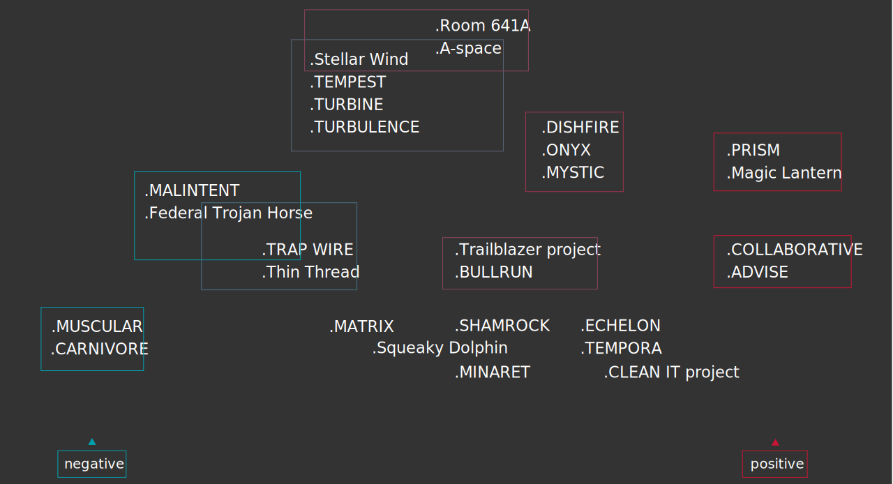

Findings
The world of mass surveillance is very wide and embrace different theme typologies, from military world to biomedical one, passing by politic, analytic research and human rights.
This network however has a significant group of nodes in his center, and this allows to delineate the operating area including topics strictly related each other. The main topics, actor and informations that come to light from this visualization are: Mass Surveillance, Privacy and Computer Security, surveillance programs like ECHELON, COINTELPRO, and surveillance whistleblowers, from the most famous Edward Snowden to the less known - at any rate in Europe - Thomas Tamm, William Binney and Thomas A. Drake. These results represent the starting point for the second step of this analysis, because they set up a themes-base that will be enlarge and improve in the next chapter.

Classification of mass surveillance programs names, emerged by See Also Network.